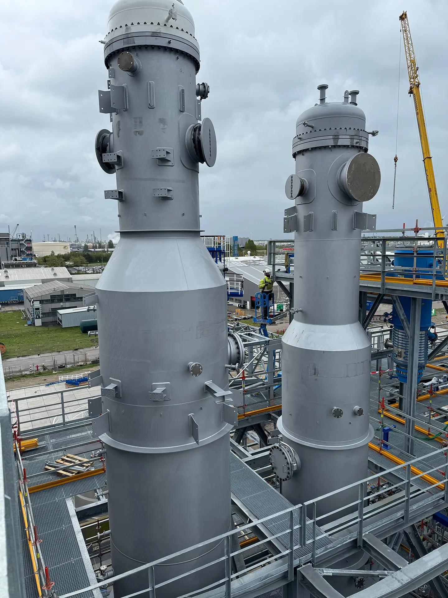

Projecten
Petrochemie
Een nieuwbouwproject voor een chemische installatie in Rotterdam-Botlek.
TJ ENTERPRISEOFFSHORE PLATFORMBOUW
Projectcategorie
Petrochemie (1)
Bekijk de projectcontext en technische kerngegevens van MXDA XA1.

Projecten
Een nieuwbouwproject voor een chemische installatie in Rotterdam-Botlek.
Projectcategorie
Bekijk de projectcontext en technische kerngegevens van MXDA XA1.